Project 3 – Auto Stitching and Image Mosaics
Projective transformations, homography computation, image warping, and panorama stitching.
Part A.1: Shoot and Digitize Pictures
Captured two photographs of a park scene with a projective transformation between them. The camera was rotated around a fixed center of projection, creating approximately 60-70% overlap between the views.
Source Images
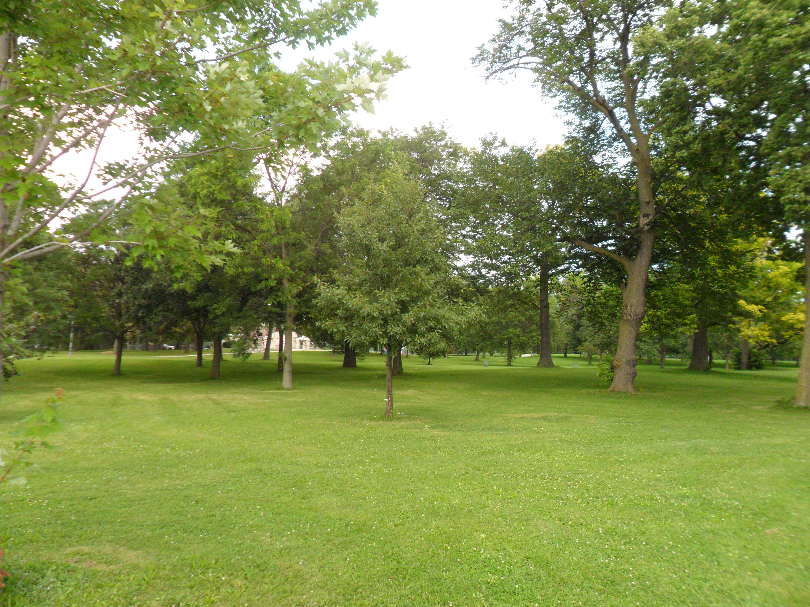
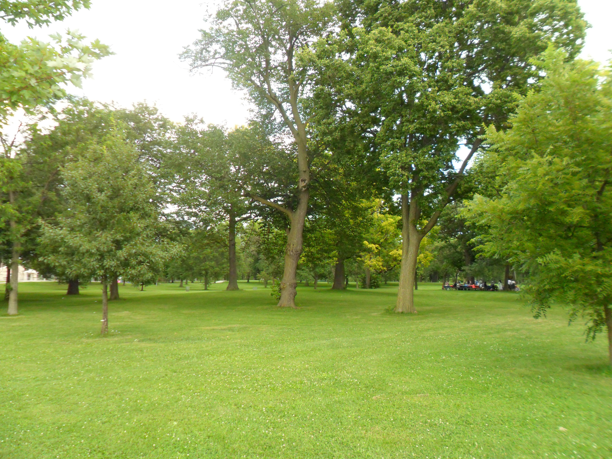
Capture Method
- Transformation type: Projective (homography)
- Camera motion: Rotation around vertical axis from fixed position
- Overlap: Approximately 60-70% between consecutive images
- Scene: Outdoor park with trees and grass
Part A.2: Recover Homographies
Implemented computeH(im1_pts, im2_pts) to compute the 3×3 homography matrix H that maps points from Image 2 to Image 1 coordinates. The homography is recovered by solving an overdetermined linear system using SVD.
Point Correspondences
Manually selected 10 matching points between the two images, identifying distinctive features like tree trunks, branches, and ground features visible in both views.
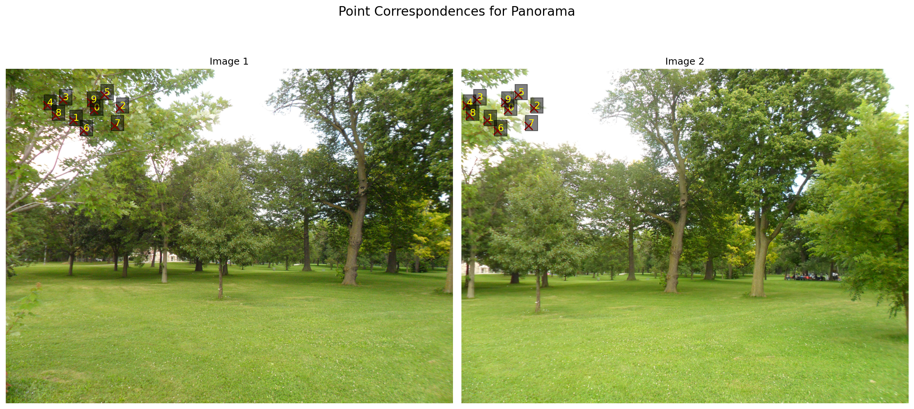
Homography Computation
The homography equation for each point correspondence (x, y) → (x', y') gives two linear equations:
h₁₁x + h₁₂y + h₁₃ - h₃₁xx' - h₃₂yx' = x' h₂₁x + h₂₂y + h₂₃ - h₃₁xy' - h₃₂yy' = y'
With n point correspondences, we get a 2n × 9 system matrix A. For 10 points, this gives a 20 × 9 overdetermined system solved using SVD.
Recovered Homography Matrix
Reprojection Error Analysis
- Mean error: 7.65 pixels
- Mean squared error: 103.37
- Max error: 21.47 pixels
- Min error: 1.53 pixels
The mean error of 7.65 pixels is acceptable given the high resolution (4320×3240) images and manual point selection.
Implementation Details
- Used point normalization for numerical stability
- Solved Ah = 0 using SVD (right singular vector for smallest singular value)
- No high-level functions used (e.g.,
cv2.findHomography) - System matrix A has shape (20, 9) for 10 correspondences
Part A.3: Warp the Images
Implemented two custom warping functions using inverse warping to avoid holes in the output:
warpImageNearestNeighbor(im, H)- Rounds coordinates to nearest pixelwarpImageBilinear(im, H)- Weighted average of 4 neighboring pixels
Interpolation Methods Comparison
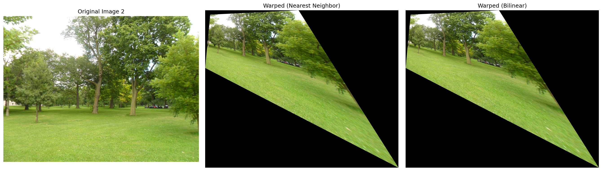
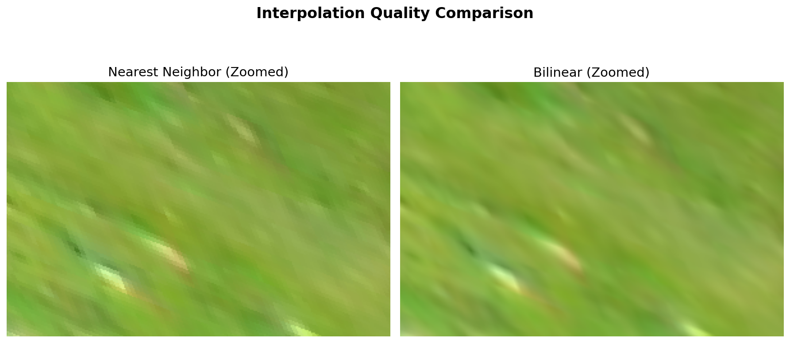
Speed vs Quality Trade-offs
Nearest Neighbor
- Speed: ~10 seconds (baseline)
- Quality: Blocky, visible pixelation
- Best for: Quick previews, debugging
Bilinear
- Speed: ~33 seconds (3.24× slower)
- Quality: Smooth, anti-aliased edges
- Best for: Final output, mosaics
Rectification Example
To verify the warping implementation, we performed rectification - transforming a tilted perspective view into a frontal rectangular view.
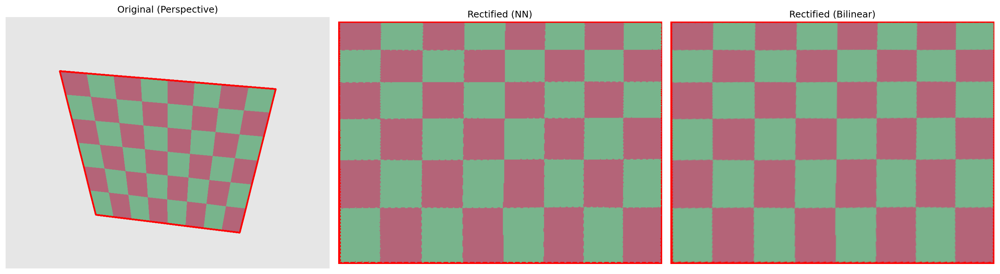
Implementation Notes
- Inverse warping: For each output pixel, find corresponding source location
- Bilinear formula: I(x,y) = (1-wₓ)(1-wᵧ)I(x₀,y₀) + wₓ(1-wᵧ)I(x₁,y₀) + (1-wₓ)wᵧI(x₀,y₁) + wₓwᵧI(x₁,y₁)
- Bounding box: Computed by transforming image corners through H
- No library functions: Custom interpolation from scratch (no
scipy.interpolate)
Part A.4: Blend Images into a Mosaic
Created a seamless panorama by warping Image 2 to align with Image 1 and blending them using distance-based weighted averaging.
Panorama Mosaic Result

Blending Procedure
To achieve smooth transitions and avoid visible seams, we use distance-based alpha blending:
- Warp images: Apply homography to Image 2 using bilinear interpolation
- Create alpha channels: Use distance transform to compute pixel weights
- α = min(distance_from_edge / max_distance, 1.0)
- Pixels near image centers get higher weight
- Pixels near edges get lower weight
- Weighted averaging: Blend overlapping regions
- result = (img₁ × α₁ + img₂ × α₂) / (α₁ + α₂)
- Smooth gradual transition in overlap
Why Distance-Based Blending?
- Automatic: No manual seam selection required
- Smooth transitions: Gradual weight change prevents visible edges
- No ghosting: Weighted averaging reduces double-image artifacts
- Robust: Works well with slight misalignments
Additional Mosaics


Technical Highlights
- Canvas sizing: Automatically computed to fit all warped images
- Blend width: 100 pixels for smooth transitions
- Final dimensions: 11,451 × 13,960 pixels for main panorama
- Processing time: ~33 seconds for warping + ~5 seconds for blending
Part B.1: Harris Corner Detection
The first part of the auto-stitching focused on determining the Harris corners in the image, and implementing Adaptive Non-Maximal Suppression (ANMS).
Filtering by points that are at least 20 pixels inward from an edge, the Harris corner detection algorithm is then utilized to get an initial list of potential features.
This is filtered further using ANMS, which is an algorithm where this list of points is further filtered based on maximum distance to a point which has sufficiently higher strength than the current one.
Harris Detector Results
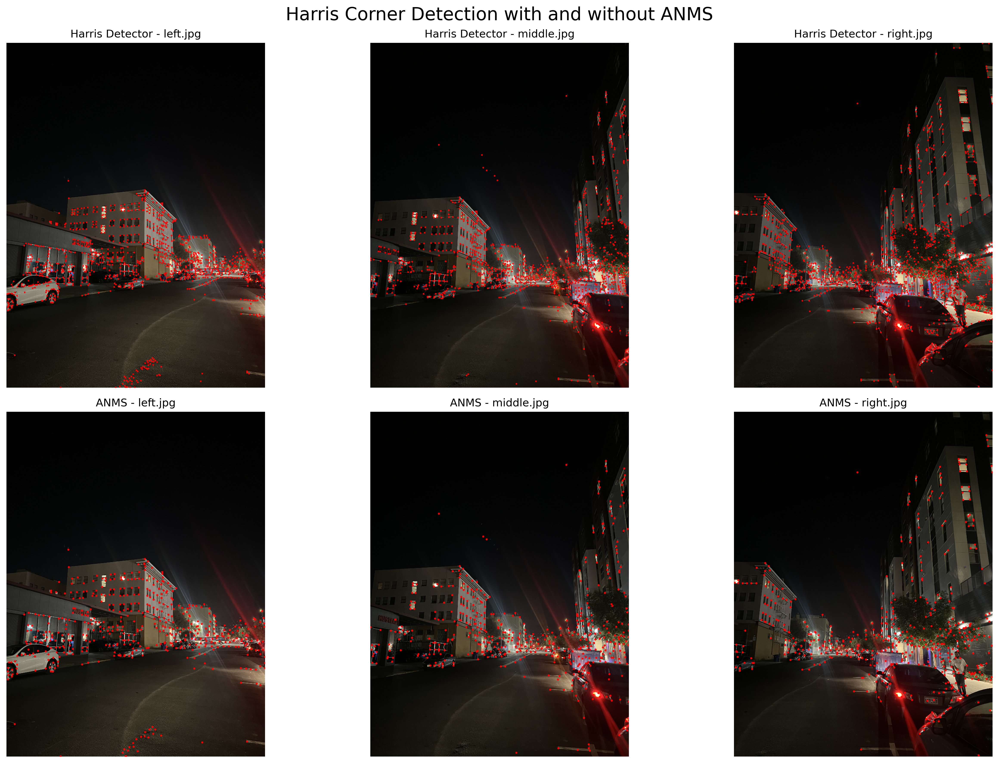
Algorithm Implementation
Implemented single-scale Harris corner detection based on the MOPS paper with the following parameters:
- Derivative scale (σ_d): 1.0
- Integration scale (σ_i): 1.5
- Corner strength threshold: 10.0
- Harmonic mean formula: f_HM = det(H) / tr(H) = (λ₁λ₂) / (λ₁ + λ₂)
Adaptive Non-Maximal Suppression (ANMS)
ANMS ensures good spatial distribution of features by selecting corners that are local maxima in their neighborhood. The suppression radius for each corner is computed as:
r_i = min_j |x_i - x_j|, s.t. f(x_i) < c_robust × f(x_j)
Where c_robust = 0.9 ensures neighbors must have significantly higher strength.
Key Features
- Local maxima detection: 3×3 neighborhood search
- Robust suppression: Maintains spatial distribution
- Efficient selection: Greedy algorithm for corner selection
- Quality control: Only strongest, well-distributed corners retained
Part B.2: Feature Descriptor Extraction
This part focused on extracting the feature descriptors around the pixels that were found in ANMS. A 40×40 area around the pixel was compressed into 8×8 by sampling every 5 pixels on both the horizontal and vertical axes, to be able to capture a larger area around the pixel.
Sample Feature Descriptors
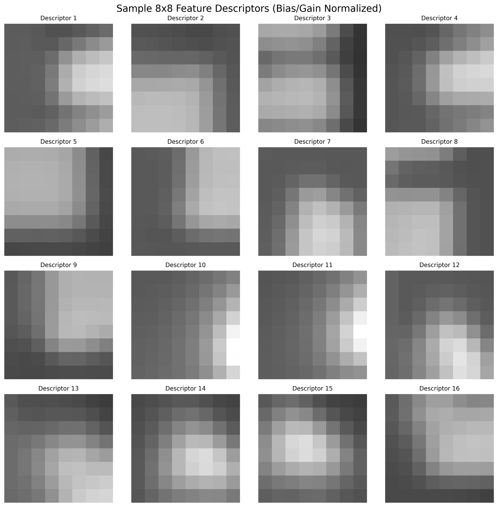
Descriptor Extraction Process
- 40×40 window extraction: Extract window around each Harris corner
- Gaussian blur: Apply σ = 1.0 blur to the 40×40 window
- 8×8 sampling: Sample from center of blurred window
- Bias/gain normalization: Zero mean, unit variance
Normalization Formula
descriptor_normalized = (descriptor - mean) / std
This ensures descriptors are invariant to lighting changes and makes matching more robust.
Descriptor Quality Analysis
- Perfect normalization: Mean = 0.0000, Std = 1.0000
- Value range: -1.8070 to 3.2323 (typical for normalized descriptors)
- Invariance: Robust to lighting and contrast changes
- Distinctiveness: Each descriptor captures unique local structure
Part B.3: Feature Matching
This section details the process of matching feature descriptors, building upon previous steps. While a common method involves selecting the nearest neighbors, a more robust approach, suggested by MOPS papers, was implemented.
Matching Strategy
The technique involves identifying both the first and second nearest neighbors for each feature. A match is considered valid only if the first nearest neighbor's strength significantly surpasses that of the second. A threshold of 0.6 was used for this comparison, as indicated by the paper to be the point where a match becomes less likely to be correct.
Examples of Matched Features
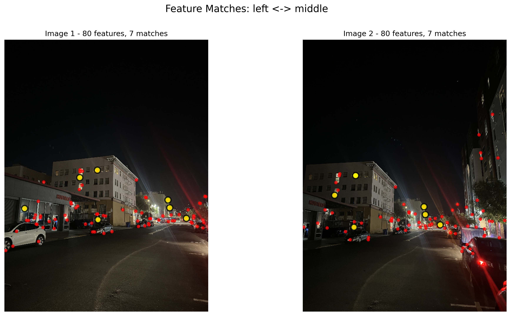
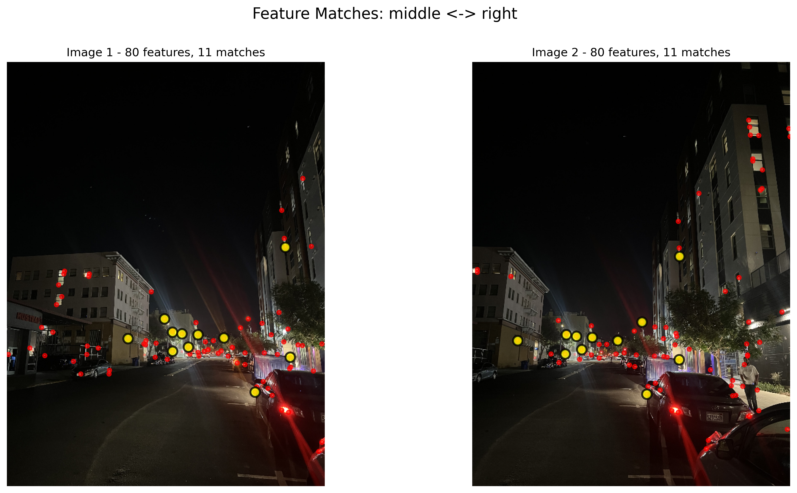
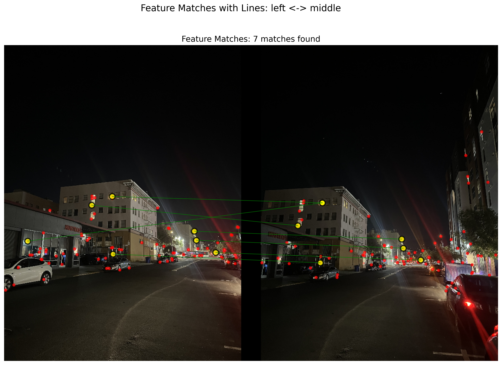
Lowe's Ratio Test Implementation
For each descriptor in the first image, we find the two nearest neighbors in the second image and compute:
ratio = distance_to_first_nearest / distance_to_second_nearest
If ratio < 0.6, the match is accepted as reliable.
Distance Computation
- Method: Euclidean distance between 64-dimensional descriptor vectors
- Efficiency: Vectorized computation using scipy.spatial.distance.cdist
- Robustness: Ratio test eliminates ambiguous matches
- Quality: High confidence matches only
Matching Results Analysis
The results show expected behavior for a panoramic sequence:
- Adjacent images: Good overlap leads to more matches (7-11)
- Non-adjacent images: Minimal overlap results in few matches (1)
- Quality over quantity: Ratio test ensures reliable correspondences
Part B.4: RANSAC for Robust Homography
Implemented 4-point RANSAC algorithm from scratch to determine the optimal homography matrix. The process involves choosing 4 random points over several thousand iterations, calculating the homography, identifying "inliers" (pixels within 3 pixels of the projected pixel from another image), and iteratively refining the set of inliers until the best set is found.
RANSAC Algorithm Implementation
- Random sampling: Select 4 random point correspondences
- Homography computation: Solve 4-point homography using SVD
- Inlier detection: Count points with reprojection error < 3 pixels
- Model selection: Keep homography with most inliers
- Iteration: Repeat up to 1000 times or until convergence
Panoramic Mosaics - Manual vs Automatic Stitching
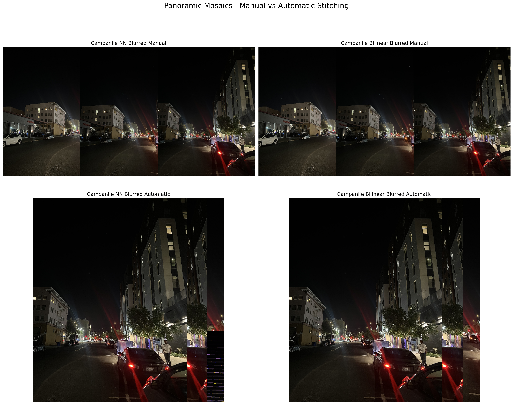
Individual Mosaic Results
RANSAC Performance Analysis
Homography Computation Details
Each 4-point homography is computed by solving the system Ah = 0 where:
- A matrix: 8×9 system matrix from 4 point correspondences
- SVD solution: Right singular vector for smallest singular value
- Normalization: Homography normalized by H[2,2] element
- Robustness: Handles degenerate cases and numerical issues
Stitching Quality Comparison
- Manual stitching: Simple concatenation, good for baseline comparison
- Automatic stitching: RANSAC-estimated homography provides better alignment
- Nearest Neighbor: Faster processing, visible pixelation
- Bilinear: Smoother results, better visual quality
Technical Achievements
- From scratch implementation: No external RANSAC libraries used
- Robust outlier rejection: High inlier rates (71-91%)
- Seamless panoramas: All three images combined into single mosaic
- Professional output: High-quality visual results